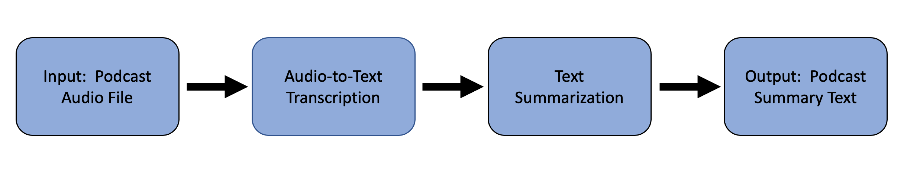
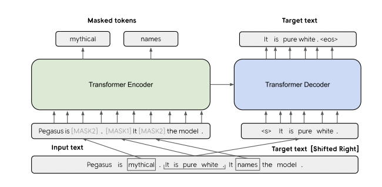
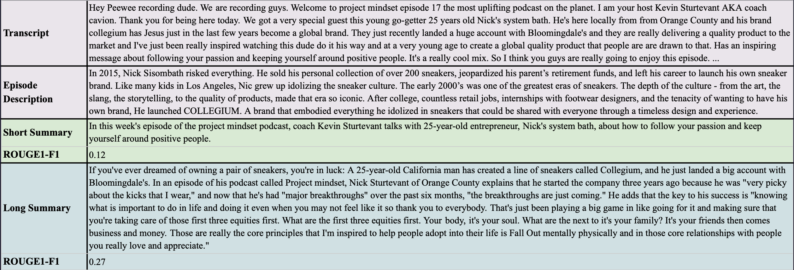
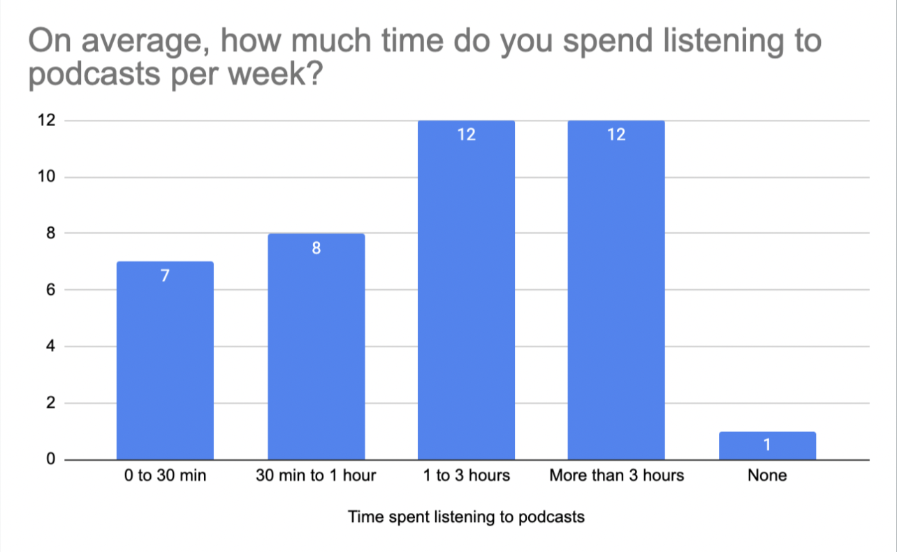
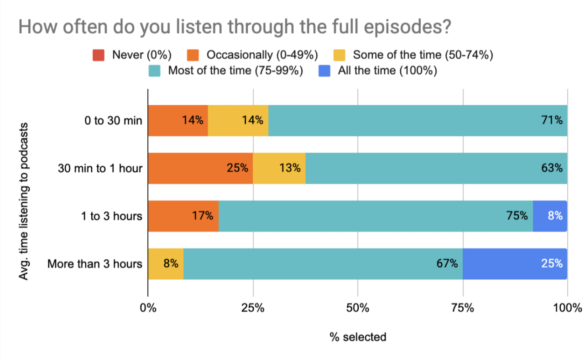
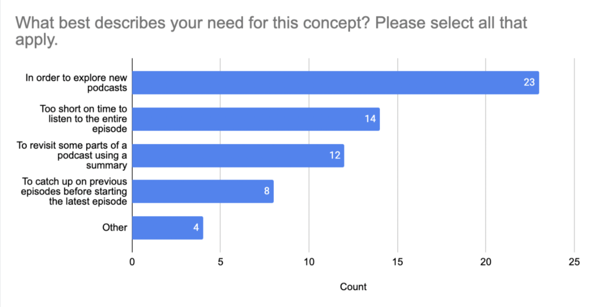

Have you ever wanted to get into a podcast episode,
but didn’t listen because it was too long?
Reading a condensed summary of details from a podcast episode can give you a sense of what a new show focuses on or help you catch up on hours’ worth of content in minutes. Whether you are catching up on previous episodes or browsing for something new, TL;DL will give you the synopses of the podcast of your choice and help you make better use of your time.
Why TL;DL?
Podcasts and its supporting listenership have exploded in recent years. The podcast industry is targeted to reach $1 billion in 2021 (BusinessInsider). A 16% increase in listeners is expected over the course of 2021, with the total number of listeners having doubled since 2016. Principle US market share holders include Apple, Spotify, YouTube and Google, with the first two possessing the majority share of the market.
Topics covered by podcasts are as diverse as listeners. Though content is more readily available than ever before, what has not changed is the time needed to consume it. According to Spotify's Podcast Dataset, the average length of podcasts is around 34 minutes. This would indicate that spending five minutes or less to read a detailed, accurate summary of podcast episodes would provide significant time-saving benefits. Furthermore, existing podcast descriptions found on popular podcast platforms aim to entice the listener, rather than provide an accurate summary of the content available.
Beyond the immediate summarization of content for podcast listeners, TL;DL can offer substantial support to entities that curate audio content. Whether it be public libraries or private companies, TL;DL can support numerous requirements within the audio industry.
TL;DL's Value Proposition
x
TL;DL aims to provide concise, accurate, and comprehensive summaries of podcast episodes that a listener can read within a few minutes in lieu of listening to episodes in their entirety. According to podcast listener surveys, we found that:
62% said they would use summaries to explore new podcasts
38% said they would read summaries instead of listening when they're short on time
In both cases, it's essential to listeners to ensure that generated summaries are not only easy and quick to read, but also accurate and comprehensive in terms of content so that they may be used to replace listening to podcasts as needed.
Sample Summary
We generated a summary of "Elise Strobach of AeroShield: a clear (and energy efficient) window to the future", from the Understory podcast; you can find the audio and transcript here.
Elise Strobach grew up in a small town in Wisconsin, where "we really spent a lot of time out in the environment and really saw the appreciation of just how magnificent the world we live in is," she says. So when she and a co-founder of her company, AeroShield, realized that 80% of new windows in the US aren't energy efficient and lose $40 billion a year because of them, "the more we became excited about trying to solve it." Their solution? A "super clear, transparent solid insulator" that's made up of 95% air, Strobach tells the Understory podcast. "It allows these tiny little pores that we've engineered to be so small that the wavelengths of light don't interact with them," she says. "It allows these tiny little pores to do all the job of superinsulation regardless of the wavelengths of light." Strobach, CEO and co-founder, says the company's " airship material" is ready to drop into existing window manufacturing so that "we can create better window products from the ground up and that's pretty exciting."
x
x
Spotify Podcast Dataset
The podcast dataset contains about 100,000 podcasts filtered to contain only documents which the creator tags as being in the English language, as well as by a language filter applied to the creator-provided title and description. Episodes were sampled from both professional and amateur podcasts including episodes produced in a studio with dedicated equipment by trained professionals, as well as episodes self-published from a phone app — these vary in quality depending on professionalism and equipment of the creator. Dataset and full information may be accesssed at https://podcastsdataset.byspotify.com/
Pipeline for Text Summarization
The supporting pipeline for this project is simple and straight forward. Upon identifying a podcast audio file, the text is transcribed and then sent to the summarization model. The output summary is an easily digestable and is approximately a paragraph in length.

Podcast Transcription
Google Cloud’s Speech to Text API handles the transcription portion of the pipeline. This out-of-the-box solution has many advantages, though it does impose some limitations on the final output.
PEGASUS is a state-of-the-art model for abstractive text summarization developed by Google Research and published at the 2020 International Conference on Machine Learning.
Google Cloud’s Speech to Text API provides access to extensively developed speech recognition models. Further, these robust models perform well with multiple speakers. Since many podcasts have multiple speakers, this feature is essential to this application. Finally, with an eye to the future, this solution is also highly scalable, as the computational requirements of processing audio data are offloaded to the cloud, which simplifies management of computational resources.
Disadvantages
Cost represents the biggest disadvantage with this transcription approach. For the enhanced model capable of processing audio from multiple speakers, and data logging opt-in enabled to reduce costs, audio transcription costs 0.6 cents per 15 second increment. This translates to 2.4 cents per minute, and $1.44 for a 60-minute podcast episode. Individually, this is not a concern; however, it would become an issue at scale. It also places a key element of the pipeline’s functionality on third-party resources. With that, it necessitates remaining vigilant about changes to the API and it provider.
PEGASUS Model for Abstractive Text Summarization
Initial summarization efforts focused on extractive synopses. These failed to meet the intent of TL;DL. This approach tended to latch onto advertisements within podcasts, or other frequently repeated phrasing at the expense of capturing the overall content of the podcast itself. An abstractive model proved to be the appropriate solution for the TL;DL application. Numerous summarization models were explored, with varying levels of results. The model that generated the best and most consistent results given podcast content was PEGASUS, Pre-training with Extracted Gap-sentences for Abstractive Summarization.
PEGASUS follows a transformer encoder-decoder architecture with novel gap-sentece pre-training. The encoder learns the masked language model task, while the decoder learns to predict missing sentences, optimized on ROUGE scoring. The model is pre-trained on two large text corpora, C4 (750GB) and HugeNews (3.8TB). More information may be found in the paper linked here and cited under the figure shown here:

Image Source: Jingqing Zhang and Yao Zhao and Mohammad Saleh and Peter J. Liu. 2020. PEGASUS: Pre-training with Extracted Gap-sentences for Abstractive Summarization.
After experimenting on the 12 datasets used to fine-tune PEGASUS, clear winners emerged for short and long text summaries. For the short summary, fine-tuning on the XSum dataset generated the most concise one sentence summarizations. The XSum dataset is sourced from 227,000 diverse BBC news articles from 2010 to 2017. Each of the articles is accompanied by a professionally written single-sentence summary for training. While this produced extremely accurate and high quality summaries, they were not long enough to fulfill our requirement of comprehensiveness needed to adequately replace listening to the entire podcast.
For the long summary, the best results emerged when fine-tuned on Multi-News, which contains 56,000 articles and accompanying human-written summaries from the website newser.com. Results from the other datasets produced either incomprensible or repetitive summaries, common problems when attempting to summarize text. Below is a sample of the results obtained when using the XSum and Multi-News pretrained versions of the PEGASUS model (short and long respectively):

Entity Hallucination
In addition to fine-tuning our PEGASUS model with the Multi-News dataset, we also generated sixty summaries of podcasts found in the Spotify dataset in order further fine-tune the model on relevant data. However, we found that pursuing this method led to entity hallucination, in which summaries generated by the model contained information that was not factual or pertinent to the podcast itself. Given that a major requirement for TL;DL is accuracy, we decided to continue to pursue the zero-shot model that was not fine-tuned on our labeled podcast data.
Evaluation
ROUGE is a widely used metric aimed to evaluate automatic summarization methods, in which generated summaries and reference summaries are compared at the n-gram level to determine model efficacy. The reference summaries we had available in Spotify's Podcast Dataset were episode descriptions, and when comparing our generated summaries to these descriptions, we found that our overall ROUGE1-F1 score was 0.14. While this is relatively poor, it is important to note that the episode descriptions at hand aim to entice the listener to consume a podcast, rather than provide a detailed summary of a podcast's contents. Given the differing goals of our available reference summaries and TL;DL summaries, it's unlikely that such comparisons will yield a holistic evaluation metric.
For this reason, we also relied on the feedback of a podcast creator to assess the quality of six of TL;DL's generated summaries. Our user testimonial found that:
The average time needed to read a TL;DL summary was 41 seconds
On a scale from 1-5, the average score for accuracy was 3.5
On a scale from 1-5, the average score for comprehensiveness was 2.7
x
Additionally, the team will continue to collect ongoing feedback on TL;DL (submit below!) until we may create or obtain a dataset with summaries of podcast episodes that are accurate and comprehensive.
Jingqing Zhang, Yao Zhao, Mohammad Saleh and Peter J. Liu. "PEGASUS: Pre-training with Extracted Gap-sentences for Abstractive Summarization". arXiv:1912.08777 (2020). [link]
Feng Nan, Ramesh Nallapati, Zhiguo Wang, Cicero Nogueira dos Santos, Henghui Zhu, Dejiao Zhang, Kathleen McKeown, and Bing Xiang. 2021. Entity-level Factual Consistency of Abstractive Text Summarization. In Proceedings of the 16th Conference of the European Chapter of the Association for Computational Linguistics, 2727–2733. Online, April. [link]
User Surveys
To capture insights from current podcast listeners, a survey was distributed to a variety of audiences and was posted on LinkedIn, Facebook Groups, and various channels on the MIDS Slack organization. We obtained a respondent sample size of 40, and the survey results (1) delineated the general habits of podcast listeners and (2) gauged the concept utility of TL;DL by asking users' interest and likely use cases.
Understanding Podcast Listener Habits
Based on survey responses, we found that around half of users spent at least one hour or more listening to podcasts per week. Given this fact, we determined three distinct audience groups within the podcast listenership:
Casual listeners (listen to less than 1 hour of podcasts per week)
Moderate listeners (listen to 1-3 hours of podcasts per week)
Enthusiastic listeners (listen to more than 3 hours of podcasts per week)
x
Around 30-37% of casual listeners report not listening to full episodes most of the time. However, this drops off for moderate (17%) and enthusiastic (8%) listeners, indicating that casual listeners are more likely to use TL;DL in lieu of listening to a full episode.
Additionally, casual and moderate listeners are more likely to think that it’s not necessary to keep current with a podcast to listen to the latest episodes. TL;DL may give casual and moderate listeners a chance to keep up with older episodes that they wouldn’t have listened to anyway.
It’s important to enthusiasts to keep current on a podcast’s older episodes. TL;DL may allow enthusiasts to keep current with a podcast without having to listen to an episode’s entirety.
x

x

Concept Utility
After asking users about podcast listening habits, we then introduced them to the concept of TL;DL as a tool that would provide accurate and comprehensive summaries of podcasts that they would listen to. When asked whether or not TL;DL would enhance their listening experience:
Moderate and enthusiastic listeners were more likely to say that TL;DL would provide little to no value
Casual listeners were the most receptive to TL;DL - 20% of group indicated the concept added a large amount of value
x
Additionally, we asked users in which scenarios they would most likely use TL;DL-generated summaries. The plot below shows the distribution of the reported likely use cases:

Thus, 62% of users said they would most likely use TL;DL to explore new podcast content, while 38% reported they would read summaries of podcasts when they were short on time.
Inspiration for this project came from avid podcast listeners who were also practicing data scientists. Brought together by the UC Berkeley MIDS program, this project represents a capstone experience that not only supported degree requirements, but also honed skills necessary to tackle present and future data challenges.